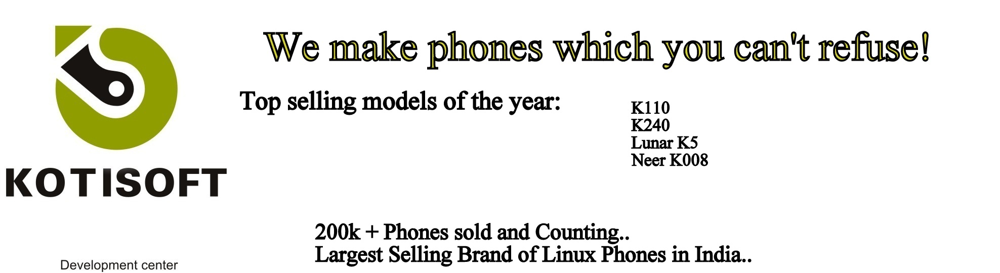

Your Issue has been registered.
You will soon receive an email from our personalized repairing unit.
If your phone is taken for repair,Kindly keep a followup on the status
Thank Your for using our portal and making us serve you better.
Click here to go back to main menu